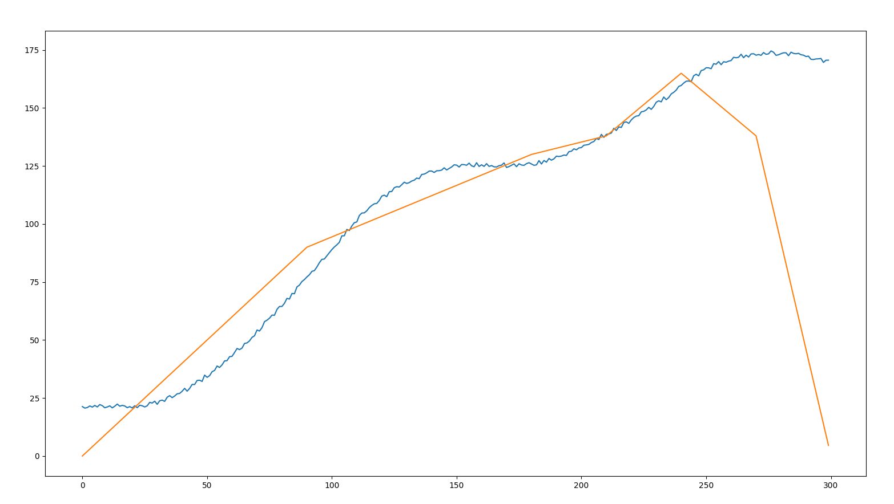
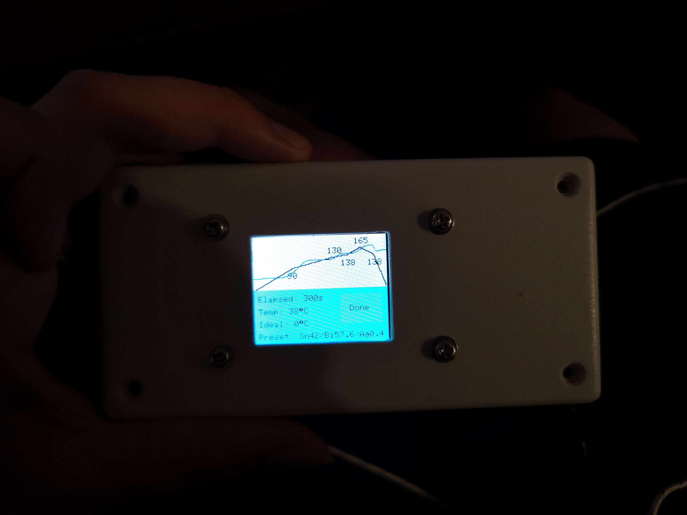

May 28, 2024
A quick model I made in python that sort of models the temperature read by a thermocouple as an oven heats up.
Python class:
class OvenModel: def __init__(self): self.power = 1400 # W self.thermalMass = 550 # J/K self.roomTemp = 20 # C # maximum obtainable temperature self.maxTemp = 350 # C self.thermoCoupleThermalMass = 280 # J/K # thermal resistance between oven's thermal mass and thermocouple self.thermoCoupleThermalResistance = 0.24 # guessed values self.thermoCoupleNoise = 2 # maximum +- 2 degrees of randomness for thermocouple # (calculated value), is the thermal resistance of the heat leaking out of the oven self.thermalResistance = (self.maxTemp - self.roomTemp) / self.power self.temp = self.roomTemp self.thermoCoupleTemp = self.roomTemp self.on = False def update(self, dt): # dt is in seconds actualPower = 0 if self.on: actualPower = self.power netEnergy = dt * (actualPower - (self.temp - self.roomTemp) / self.thermalResistance) self.temp += netEnergy / self.thermalMass netEnergyIntoThermocouple = dt * (self.temp - self.thermoCoupleTemp) / self.thermoCoupleThermalResistance deltaTempThermocouple = netEnergyIntoThermocouple / self.thermoCoupleThermalMass self.thermoCoupleTemp += deltaTempThermocouple return self.thermoCoupleTemp + random.random() * self.thermoCoupleNoise
Instantiate the class, and call update() with a time step (1 second is fine usually), and it update() returns the temperature "read" by a "thermocouple". It seems to be sort of similar to a real toaster oven.
(If you want to model 500 seconds of the oven's temperature, you must call update() 500 times and save the results to a buffer or something).
The blue line is the "real" (modelled) temperature, while the other one is the ideal. This example is not using a PID loop, but simply, if real temperature is less than ideal, turn on the oven, else, turn off the oven.
This graph is somewhat similar to one of a real toaster oven.
(Apologies for the poor image quality. Also, the weird dip near the end is because I opened the oven's door.)
See also: toaster reflow oven